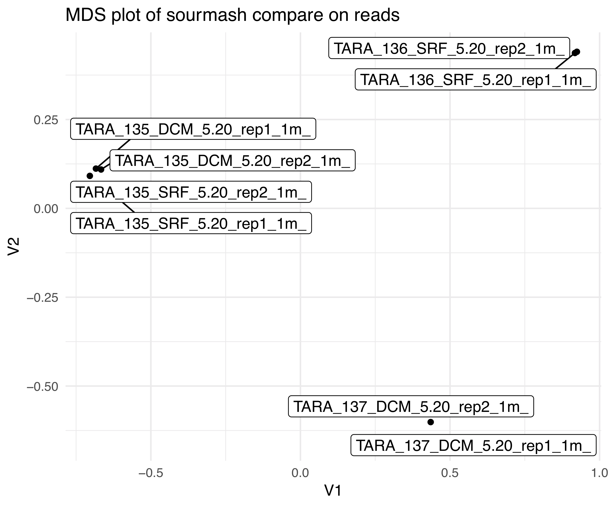
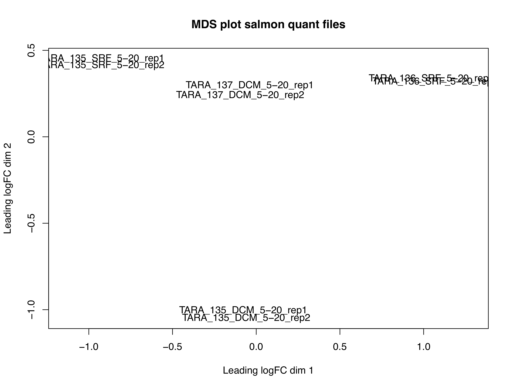

How well did our assembly work?
Set up the directory
First, make sure you have the PROJECT variable defined:
echo $PROJECT
if you don't see any output, make sure to redefine the $PROJECT variable.
Now, let's create a folder evaluation to work in:
cd $PROJECT
mkdir -p evaluation
cd evaluation
Now, let's copy in the assembly we made in the previous lesson:
cp $PROJECT/assembly/tara135_SRF_megahit.fasta ./
Generate assembly statistics with Transrate
Transrate is a program that can be used for a couple different types of assembly evaluation. The first and simplest method is to calculate length-based metrics about the assembly, such as the total number of bases, and the N50 of the contigs. Transrate can also be used to compare two assemblies or give you a score which represents proportion of input reads that provide positive support for the assembly. For a further explanation of metrics and how to run the reference-based transrate, see the documentation and the paper by Smith-Unna et al. 2016.
We have installed transrate for you. However, if you need to install it in the future, see installation instructions here.
See options for running transrate:
transrate -h
Let's use transrate to calculate some stats on our assembly contigs:
transrate --assembly tara135_SRF_megahit.fasta
You should see output that looks like this:
[ INFO] 2018-11-06 23:50:35 : Loading assembly: /LUSTRE/bioinformatica_data/bioinformatica2018/assembly/tara135_SRF_megahit.fasta
[ INFO] 2018-11-06 23:50:35 : Analysing assembly: /LUSTRE/bioinformatica_data/bioinformatica2018/assembly/tara135_SRF_megahit.fasta
[ INFO] 2018-11-06 23:50:35 : Results will be saved in /LUSTRE/bioinformatica_data/bioinformatica2018/assembly/transrate_results/tara135_SRF_megahit
[ INFO] 2018-11-06 23:50:35 : Calculating contig metrics...
[ INFO] 2018-11-06 23:50:35 : Contig metrics:
[ INFO] 2018-11-06 23:50:35 : -----------------------------------
[ INFO] 2018-11-06 23:50:35 : n seqs 1502
[ INFO] 2018-11-06 23:50:35 : smallest 200
[ INFO] 2018-11-06 23:50:35 : largest 4998
[ INFO] 2018-11-06 23:50:35 : n bases 638347
[ INFO] 2018-11-06 23:50:35 : mean len 425.0
[ INFO] 2018-11-06 23:50:35 : n under 200 0
[ INFO] 2018-11-06 23:50:35 : n over 1k 40
[ INFO] 2018-11-06 23:50:35 : n over 10k 0
[ INFO] 2018-11-06 23:50:35 : n with orf 331
[ INFO] 2018-11-06 23:50:35 : mean orf percent 83.54
[ INFO] 2018-11-06 23:50:35 : n90 232
[ INFO] 2018-11-06 23:50:35 : n70 360
[ INFO] 2018-11-06 23:50:35 : n50 453
[ INFO] 2018-11-06 23:50:35 : n30 599
[ INFO] 2018-11-06 23:50:35 : n10 935
[ INFO] 2018-11-06 23:50:35 : gc 0.51
[ INFO] 2018-11-06 23:50:35 : bases n 0
[ INFO] 2018-11-06 23:50:35 : proportion n 0.0
[ INFO] 2018-11-06 23:50:35 : Contig metrics done in 0 seconds
[ INFO] 2018-11-06 23:50:35 : No reads provided, skipping read diagnostics
[ INFO] 2018-11-06 23:50:35 : No reference provided, skipping comparative diagnostics
[ INFO] 2018-11-06 23:50:35 : Writing contig metrics for each contig to /LUSTRE/bioinformatica_data/bioinformatica2018/assembly/transrate_results/tara135_SRF_megahit/contigs.csv
[ INFO] 2018-11-06 23:50:35 : Writing analysis results to assemblies.csv
Comparing Assemblies
We built a metatranscriptome with the full set of TARA_SRF reads. Copy this into your evaluation directory
cd ${PROJECT}/evaluation
ln -s LUSTRE/bioinformatica_data/bioinformatica2018/assembly/tara_f135_full_megahit.fasta
- How do the two transcriptomes compare with each other?
# full vs. subset
transrate --reference=tara_f135_full_megahit.fasta --assembly=tara135_SRF_megahit.fasta --output=full_v_subset
# subset vs. full
transrate --assembly=tara_f135_full_megahit.fasta --reference=tara135_SRF_megahit.fasta --output=subset_v_full
How well does this assembly represent our sequenced reads?
It's useful to know how well the transcripts represent the sequenced reads. To do this, we'll need to link in the reads we used to generate this assembly:
ln -s ${PROJECT}/trimmed/TARA_135_SRF_5-20_*.qc.fq.gz ./
Quantifying reads with Salmon
We will use Salmon to quantify expression. Salmon is a new breed of software for quantifying RNAseq reads that is both really fast and takes transcript length into consideration (Patro et al. 2017).
You can read more about salmon-like "pseudoalignment" here:
- Intro blog post: http://robpatro.com/blog/?p=248
- A 2016 blog post evaluating and comparing methods here
- Salmon github repo here
- 2018 paper: A direct comparison of genome alignment and transcriptome pseudoalignment
Quantification with Salmon
Check that salmon is available and see run options:
salmon -h
Now let's check that we still have the trimmed data we created day 1:
set -u
printf "\nMy trimmed data is in $PROJECT/quality/, and consists of $(ls -1 ${PROJECT}/quality/*.qc.fq.gz | wc -l) files\n\n"
set +u
where set -u should let you know if you have any unset variables, i.e. if the $PROJECT variable is not defined.
If you see -bash: PROJECT: unbound variable, then you need to set the $PROJECT variable.
export PROJECT= ~/work
and then re-run the printf code block.
NOTE: if you do not have files, please rerun quality trimming steps here
Create a directory to work in
cd ${PROJECT}
mkdir -p quant
cd quant
Link an assembly
We use a full assembly to use for mapping. This assembly was made with all TARA_135 SRF reads, rather than the subset we used in the assembly tutorial.
ln -s /LUSTRE/bioinformatica_data/bioinformatica2018/assembly/tara_f135_full_megahit.fasta ./
Run Salmon
Build an index for the metatranscriptome:
salmon index --index tara135 --transcripts tara_f135_full_megahit.fasta
Next, link in the QC reads (produced in quality:
ln -s ../quality/*.qc.fq.gz ./
Then, run the salmon mapping:
for sample in *1.qc.fq.gz
do
base=$(basename $sample _1.fq.gz)
echo $base
salmon quant -i tara135 -p 2 -l A -1 ${base}_1.qc.fq.gz -2 ${base}_2.qc.fq.gz -o ${base}_quant
done
This will create a bunch of directories named something like
TARA_135_SRF_5-20_rep1_quant, containing a bunch of files. Take a
look at what files there are:
You should see:
aux_info
cmd_info.json
lib_format_counts.json
libParams
logs
quant.sf
The two most interesting files are quant.sf, which contains the counts,
and salmon_quant.log (in the logs directory), which contains a
log from the salmon run.
Looking at count data
The quant.sf files contain the relevant information about
contig expression -- take a look
head -20 TARA_135_SRF_5-20_rep1_1m_quant/quant.sf
You should see output that looks like this:
Name Length EffectiveLength TPM NumReads
k119_5 212 63.757 0.000000 0.000
k119_10 231 75.730 0.000000 0.000
k119_14 261 97.683 0.000000 0.000
k119_16 301 130.690 11.736728 1.000
k119_18 302 131.560 0.000000 0.000
k119_21 203 58.357 0.000000 0.000
k119_22 308 136.790 0.000000 0.000
The first column contains the transcript names, and the fifth column is the "raw counts", which is what many differential expression programs need.
Assess Mapping rate
Okay, we got some numbers for how much the transcripts were expressed, but how well did the reads map overall? Let's go look at one of the log files to see.
less TARA_135_SRF_5-20_rep1_1m_quant/logs/salmon_quant.log
How well did the reads map to the metatranscriptome?
Let's see how the rest of the files mapped. We can look at the mapping rate in each log file by executing the following:
grep Mapping *quant/logs/*
grep is a handy program that finds and prints lines in files that match a pattern. In this case,
the pattern we're searching for is the word 'Mapping', and we're searching in any directory that
ends in quant and has a logs directory with at least one file in it.
How do the mapping rates compare? What does this tell us about our metatranscriptome?
How well does quantification capture sample distances?
We made an MDS plot of our sourmash compare results yesterday. With our salmon
quant.sf files, we can also make and MDS plot and see how different the two are.
This will demonstrate how well mapping to our assembly captures the information
in our reads.
We already ran the code to do this, but if you want to see what it looks like,
you can find it here. It relies on the quant.sf files output by Salmon.
 
Look how different they are! To be fair, we only mapped back to a full transcriptome with 1 million reads, but this is still a good test.
What might this say about our samples?
Another way to assess read mapping
Transrate actually has a read assessment mode that uses salmon to "align" reads to the transcriptome and generates some metrics on read mapping.
We won't run this today, but you could run it via:
transrate --assembly=tara135_SRF_megahit.fasta --threads=2 --left=*_1.qc.fq.gz --right *_2.qc.fq.gz --output=${PROJECT}/evaluation/tara135_SRF_transrate
Other useful tutorials and references
- https://github.com/ngs-docs/2015-nov-adv-rna/blob/master/salmon.rst
- http://angus.readthedocs.io/en/2016/rob_quant/tut.html
- https://2016-aug-nonmodel-rnaseq.readthedocs.io/en/latest/quantification.html